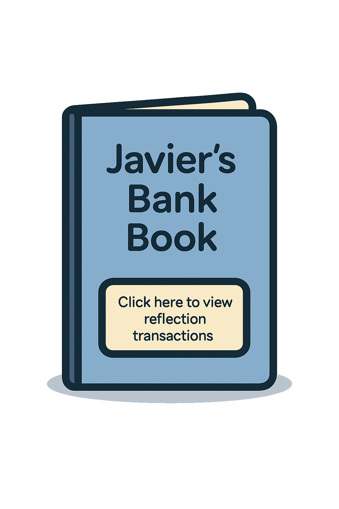

About My Internship
I interned at OCBC for a year under Group Operations and Technology (GOT), within the Group Engineering department. My role revolves around data engineering and analytics, where I help build live, end-to-end dashboard solutions for teams across different departments.
This involves working closely with users to understand their needs, developing automated workflows, and delivering clear, actionable insights through visual dashboards. The internship has given me valuable exposure to enterprise data systems and cross-functional collaboration, while deepening my technical skills in data processing and real-world problem-solving.
📅 Duration
Mar 2025 – Mar 2026
🏢 Department
Group Operations & Technology (GO&T) - Group Engineering
🎯 Focus
Data Analytics, Automation, Dashboards, Data Engineering
Projects

Reflection
🗓️ Week 1-4 – Mastering User Communication (Task 1)
Meeting with users really helped me understand what they actually need from the dashboard and what questions they want answered. It made me realize how important it is to listen first before jumping into building.
Going through sample data gave me a clearer picture of what’s possible and what adjustments we need to make behind the scenes. Overall, it showed me that good communication and a solid understanding of data go hand in hand to create something truly useful. One of the challenges is learning how to communicate with the users independently, without the need of supervision from our supervisor.
I started shadowing my supervvisor in the first few weeks which helped me to learn the ropes fast and the skills/knowledge needed to communicate with the user. Now I am able to hold calls and meetings independently without supervision.
🗓️ Week 5-8 – Data Preparation (Task 1)
Cleaning and formatting seemed simple at first, but I soon realized that one small mistake could break the entire pipeline. Creating schemas taught me to think ahead about structure and meaning, not just storage. Using BDMF made me appreciate the importance of audit trails, it's not just about loading data, but proving it's done right.
This phase taught me how crucial precision, traceability, and foresight are in making data truly useful. Initially I had difficulties understanding their SQL code as it was way more complex and different from what we were taught in school. I also had difficulties understanding how MobaXterm works as it runs on linux commands and also understanding how the BDMF framework works in this pipeline. I took sometime to learn the basics during free time by using available resources such as chatgpt and online courses which helped me understand better on how their SQL code and BDMF framework works.
Documenting linux commands on txt file helped me greatly as i can refer to them whenever i need them which eased the stress of remembering all the commands and what it does. Now I am able to see the bigger picture of how everything connects, and also knowing how to start working with the data pipeline.
🗓️ Week 9-12 – Debugging With Purpose (Task 1)
During the data validation phase, one major problem that I faced was debugging the issue that was causing problems in the data pipeline. This has showed me that one wrong number on the dashboard could mean alot things such as wrong schema, file/ingestion/logic issue etc. This made it harder to debug the problem.
What helped me overcome this was documenting the correct numbers (verified from users) and wrong numbers for reference. Learning from my supervisor, especially how to recognize common scenarios and where to look when something breaks, which gave me a structured way to troubleshoot.
During testing, I also made it a habit to think about how to make the pipeline more robust. Every time something went wrong, I asked myself: how can this be prevented in production? This mindset helped me design safer, more automated processes that can run with minimal errors once deployed.
🗓️ Week 13-16 – Delivering To Production (Task 1)
Deploying to production gave me a real understanding of how large companies like OCBC ensure stability, automation, and control at scale. I learned what needs to be finalized before deployment, from SQL views to PBIX dashboards, config files, and ingestion paths.
What stood out to me was how structured the handover is , everything must be tested, reviewed, and packaged clearly. Being part of this process made me realize how important it is to plan ahead, document properly, and make sure the pipeline is fully reliable before going live. It was rewarding to know that something I helped build is now being used in a live environment.
🗓️ Week 1-4 – Learning Dashboard Planning (Task 2)
Before building any dashboard, I learned the process of gathering requirements, including the data schema, the nature and volume of the data, what key metrics need to be shown, and the business logic behind each one.
I also learned how users clarify how they want the data to be displayed visually, often by creating mockups in PowerPoint to confirm design and layout before starting the actual build. This planning stage helped reduce confusion later and made the dashboard more aligned with what the business truly needed.
🗓️ Week 5-8 – Mastering SQL In A MNC Environment (Task 2)
Working with SQL in a large corporate environment like OCBC exposed me to complex, real-world logic that goes far beyond what we learn in school. As I became more confident, I began looking for ways to improve the structure and readability of the code.
Through my own research, I discovered that using Common Table Expressions (CTEs) would make the logic more organized, maintainable, and reliable, especially in a setting where queries are layered and intricate.
I proposed this approach to my supervisor, and we ended up implementing the logic I designed using CTEs.
Seeing my structure adopted in our final workflow was a rewarding milestone. It showed me that with initiative and technical understanding, even interns can make meaningful contributions in a complex data environment.
🗓️ Week 9-12 – Finalized Product (Task 2)
One of the biggest challenges was learning how everything connects, from the database to the final dashboard. DAX and Query M were new to me, and the dashboard design approach at OCBC was much more advanced than what we learned in school.
It involved complex relationships, conditional formatting, and highly informative layouts.
With the help of online resources and ChatGPT, I gradually understood how to work with these tools and languages.
More importantly, I learned how to think beyond standard visuals by focusing on clarity, functionality, and user needs to build dashboards that are both powerful and insightful.
🗓️ Week 9-12 – Finalized Product (Task 3)
-
🗓️ Week 9-12 – Finalized Product (Task 3)
-
🗓️ Week 9-12 – Finalized Product (Task 3)
-